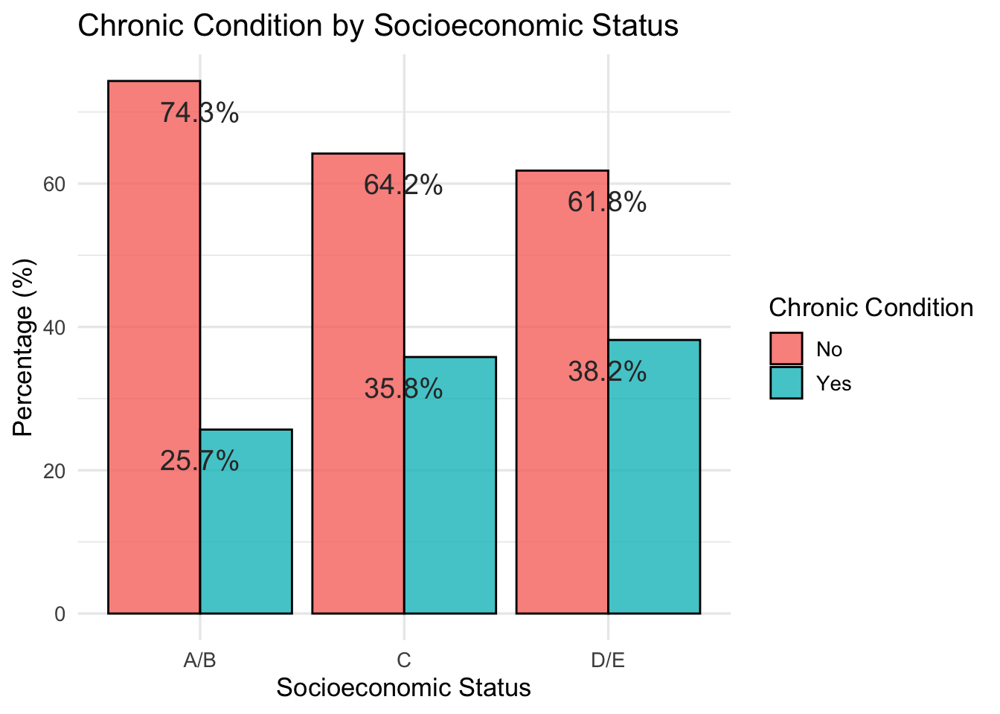
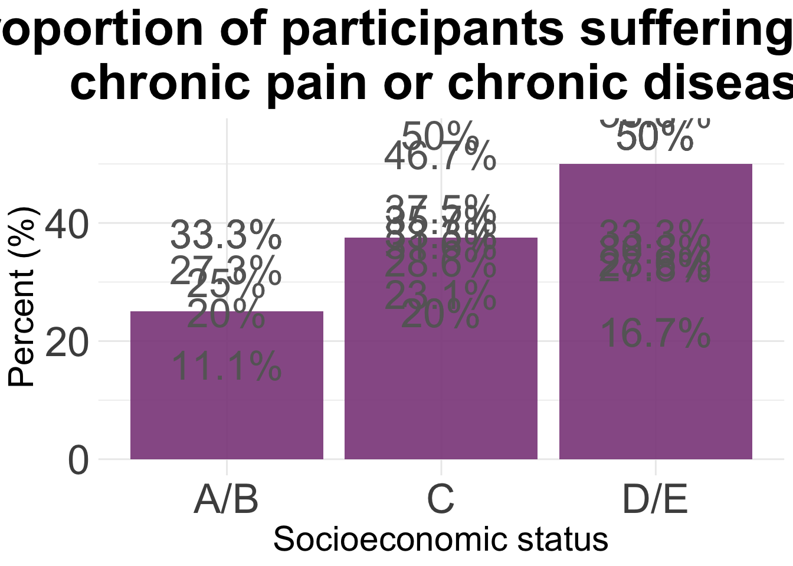

Plots_Latinx_research_week
Paloma
2025-01-27
Last updated: 2025-04-15
Checks: 6 1
Knit directory: QUAIL-Mex/
This reproducible R Markdown analysis was created with workflowr (version 1.7.1). The Checks tab describes the reproducibility checks that were applied when the results were created. The Past versions tab lists the development history.
The R Markdown file has unstaged changes. To know which version of
the R Markdown file created these results, you’ll want to first commit
it to the Git repo. If you’re still working on the analysis, you can
ignore this warning. When you’re finished, you can run
wflow_publish to commit the R Markdown file and build the
HTML.
Great job! The global environment was empty. Objects defined in the global environment can affect the analysis in your R Markdown file in unknown ways. For reproduciblity it’s best to always run the code in an empty environment.
The command set.seed(20241009) was run prior to running
the code in the R Markdown file. Setting a seed ensures that any results
that rely on randomness, e.g. subsampling or permutations, are
reproducible.
Great job! Recording the operating system, R version, and package versions is critical for reproducibility.
Nice! There were no cached chunks for this analysis, so you can be confident that you successfully produced the results during this run.
Great job! Using relative paths to the files within your workflowr project makes it easier to run your code on other machines.
Great! You are using Git for version control. Tracking code development and connecting the code version to the results is critical for reproducibility.
The results in this page were generated with repository version 1414b15. See the Past versions tab to see a history of the changes made to the R Markdown and HTML files.
Note that you need to be careful to ensure that all relevant files for
the analysis have been committed to Git prior to generating the results
(you can use wflow_publish or
wflow_git_commit). workflowr only checks the R Markdown
file, but you know if there are other scripts or data files that it
depends on. Below is the status of the Git repository when the results
were generated:
Ignored files:
Ignored: .DS_Store
Ignored: .RData
Ignored: .Rhistory
Ignored: .Rproj.user/
Ignored: analysis/.DS_Store
Ignored: analysis/.RData
Ignored: analysis/.Rhistory
Ignored: analysis/HLTH_counts_by_SES.png
Ignored: analysis/Hrs_by_HWISE score.png
Ignored: analysis/odds_ratio_plot.png
Ignored: analysis/stacked_barplot.png
Ignored: code/.DS_Store
Ignored: data/.DS_Store
Unstaged changes:
Modified: analysis/Plots_Latinx_research_week.Rmd
Note that any generated files, e.g. HTML, png, CSS, etc., are not included in this status report because it is ok for generated content to have uncommitted changes.
These are the previous versions of the repository in which changes were
made to the R Markdown
(analysis/Plots_Latinx_research_week.Rmd) and HTML
(docs/Plots_Latinx_research_week.html) files. If you’ve
configured a remote Git repository (see ?wflow_git_remote),
click on the hyperlinks in the table below to view the files as they
were in that past version.
| File | Version | Author | Date | Message |
|---|---|---|---|---|
| Rmd | 1414b15 | Paloma | 2025-04-10 | plots Sanaa |
| html | 1414b15 | Paloma | 2025-04-10 | plots Sanaa |
| Rmd | 3ca4968 | Paloma | 2025-04-10 | plots Sanaa |
| html | 3ca4968 | Paloma | 2025-04-10 | plots Sanaa |
| html | 1453f8b | Paloma | 2025-04-09 | new urop plots |
| Rmd | c9896b1 | Paloma | 2025-02-25 | ses-health |
| html | c9896b1 | Paloma | 2025-02-25 | ses-health |
| Rmd | 44474e3 | Paloma | 2025-02-22 | Create Plots_Latinx_research_week.Rmd |
Data cleaning
#Loading file and setting empty cells as "NAs"
d <- read.csv("./data/01.SCREENING.csv", stringsAsFactors = TRUE, na.strings = c("", " ","NA", "N/A"))
# extract duplicates and compare values (removed manually for now)
dup <- d$ID[duplicated(d$ID)]
length(dup) # 38[1] 138#print(dup)
# remove duplicates
d <- d[!duplicated(d$ID),]
# confirm total number of participants
length(unique(d$ID)) # 433 rows, but 394 participants[1] 399# What numbers are missing?
ID <- as.ordered(d$ID)
# first trip
setdiff(1:204, ID)[1] 71 164nrow(d[d$ID <=250,])[1] 202# second trip
setdiff(301:497, ID)integer(0)nrow(d[d$ID >=250,])[1] 197nrow(d)[1] 399 #make ID number the row names
rownames(d) <- d$ID
# Code NAs
d[d=='NA'] <- NA
d <- d %>%
replace_na()
# Count rows with NAs
nrow(d[rowSums(is.na(d)) > 0,]) # 12 rows[1] 399nrow(d[!complete.cases(d),]) # 12 rows[1] 399#NAs <- d[rowSums(is.na(d))> 0,]
#write.table(NAs, "240301_SES_Age_NAs.csv", row.names=FALSE)
# Select useful information
d <- d %>%
select(ID, SES_EDU_SC, SES_BTHR_SC, SES_CAR_SC, SES_INT_SC, SES_WRK_SC, SES_BEDR_SC)
# transform factors to numbers
for (i in c(2:length(d))) {
d[,i] <- as.numeric(as.character(d[,i]))
}Warning: NAs introduced by coercion
Warning: NAs introduced by coercion# Keep rows with no missing data
d <- d[complete.cases(d),] # - 9 (dup) # total 382 complete cases, total 394
nrow(d)[1] 349head(d) ID SES_EDU_SC SES_BTHR_SC SES_CAR_SC SES_INT_SC SES_WRK_SC SES_BEDR_SC
1 1 10 24 0 31 61 23
2 2 31 47 18 31 46 23
3 3 31 0 0 0 15 6
4 4 73 47 0 31 46 17
5 5 35 24 0 31 15 12
6 6 73 47 0 31 46 23#write.csv(d, paste("./cleaned/", date, "_SES_clean.csv", sep=""))
# Calcular total SES score
d$SES_score <- rowSums(d[2:7], na.rm = TRUE)
# SES categories
d$SES <- #ifelse(d$SES_score <= 47,"E",
# ifelse(d$SES_score <= 89, "D-/E",
ifelse(d$SES_score <= 111, "D/E",
# ifelse(d$SES_score <= 135, "C-",
ifelse(d$SES_score <= 165, "C",
# ifelse(d$SES_score <= 204, "C+",
"A/B"))
# Min. 1st Qu. Median Mean 3rd Qu. Max.
# 25.0 104.0 129.0 133.1 159.0 263.0
d %>%
group_by(SES) %>%
summarise(n_total = n())# A tibble: 3 × 2
SES n_total
<chr> <int>
1 A/B 75
2 C 162
3 D/E 112combining data
#Loading file and setting empty cells as "NAs"
c <- read.csv("./data/Chronic_pain_illness.csv", stringsAsFactors = TRUE, na.strings = c("", " ","NA", "N/A"))
c$chronic <- as.factor(ifelse(c$HLTH_CPAIN_CAT == 1 | c$HLTH_CDIS_CAT == 1, "Yes", "No"))
m <- merge(d,c, by="ID")
dim(m)[1] 349 12m[m =='NA'] <- NA
m <- m %>%
replace_na()
m <- m %>%
drop_na()
m %>%
group_by(SES) %>%
summarise(n_total = n())# A tibble: 3 × 2
SES n_total
<chr> <int>
1 A/B 74
2 C 162
3 D/E 110agg<- count(m, SES, chronic)
agg2 <- pivot_wider(agg,
names_from = chronic,
values_from = n)
agg2$Total <- agg2$Yes/(agg2$Yes + agg2$No)*100
#png(file= "HLTH_counts_by_SES.png", width = 700, height = 800 )
ggplot(agg2, aes(x = SES, y = Total)) +
geom_bar(stat= "identity", fill = "orchid4", alpha = 0.9) +
ylim(0, 55) +
theme_minimal() +
geom_text(aes(label = paste(round(Total, 1), "%", sep="")),
vjust = -0.5,
colour = "gray40",
size = 9) +
theme(
plot.title = element_text(hjust = 0.5,
size = 32, face = "bold"),
axis.title = element_text(size = 22),
axis.text = element_text(size = 26)
) +
labs(title="Proportion of participants suffering from \n chronic pain or chronic disease") +
xlab("Socioeconomic status") +
ylab("Percent (%)") 
#dev.off()
data <- m
# Step 1: Create a frequency table by SES and chronic condition
plot_data <- data %>%
count(SES, chronic) %>%
group_by(SES) %>%
mutate(percent = 100 * n / sum(n))
# Step 2: Plot as grouped bar chart (percentage)
ggplot(plot_data, aes(x = SES, y = percent, fill = chronic)) +
geom_bar(stat = "identity", position = "dodge", alpha = 0.8, color = "black") +
# scale_fill_manual(values = c("No" = "#fbaca7", "Yes" = "#52d8da")) +
geom_text(aes(label = paste(round(percent, 1), "%", sep="")),
vjust = 2,
colour = "gray20",
size = 5) +
labs(
title = "Chronic Condition by Socioeconomic Status",
x = "Socioeconomic Status",
y = "Percentage (%)",
fill = "Chronic Condition"
) +
theme_minimal(base_size = 13)
models
# Sample dataframe (assumes it's already loaded as `data`)
data <- m
data$chronic <- factor(data$chronic, levels = c("No", "Yes"))
# Model 1: Overall SES score
m1 <- glm(chronic ~ SES_score, data = data, family = "binomial")
# Model 2: Overall SES category
m2 <- glm(chronic ~ SES, data = data, family = "binomial")
# Model 3: Individual SES components
m3 <- glm(chronic ~ SES_EDU_SC + SES_BTHR_SC + SES_CAR_SC + SES_INT_SC +
SES_WRK_SC + SES_BEDR_SC, data = data, family = "binomial")
# Model 4: Components + categorical SES
m4 <- glm(chronic ~ SES + SES_EDU_SC + SES_BTHR_SC + SES_CAR_SC + SES_INT_SC +
SES_WRK_SC + SES_BEDR_SC, data = data, family = "binomial")
# Model 5: SES components + interactions
m5 <- glm(chronic ~ SES_EDU_SC * SES_WRK_SC +
SES_BTHR_SC * SES_INT_SC +
SES_CAR_SC +
SES_BEDR_SC,
data = data, family = "binomial")
# Each model includes one SES component
m6 <- glm(chronic ~ SES_EDU_SC, data = data, family = "binomial")
m7 <- glm(chronic ~ SES_BTHR_SC, data = data, family = "binomial")
m8 <- glm(chronic ~ SES_CAR_SC, data = data, family = "binomial")
m9 <- glm(chronic ~ SES_INT_SC, data = data, family = "binomial")
m10 <- glm(chronic ~ SES_WRK_SC, data = data, family = "binomial")
m11 <- glm(chronic ~ SES_BEDR_SC, data = data, family = "binomial")
m12 <- glm(chronic ~ SES_EDU_SC + SES_BTHR_SC + SES_CAR_SC +
SES_INT_SC + SES_WRK_SC + SES_BEDR_SC,
data = data, family = "binomial")
aic_table <- AIC(m1, m2, m3, m4, m5, m6, m7, m8, m9, m10 , m11, m12) %>%
as.data.frame() %>%
arrange(AIC)
print(aic_table) df AIC
m7 2 443.9942
m11 2 444.5681
m1 2 446.9714
m2 3 447.9312
m8 2 448.4072
m10 2 448.4643
m3 7 448.7560
m12 7 448.7560
m9 2 448.7796
m6 2 449.2725
m5 9 451.2714
m4 9 452.0018m7
Call: glm(formula = chronic ~ SES_BTHR_SC, family = "binomial", data = data)
Coefficients:
(Intercept) SES_BTHR_SC
-0.30351 -0.01602
Degrees of Freedom: 345 Total (i.e. Null); 344 Residual
Null Deviance: 445.4
Residual Deviance: 440 AIC: 444m11
Call: glm(formula = chronic ~ SES_BEDR_SC, family = "binomial", data = data)
Coefficients:
(Intercept) SES_BEDR_SC
-0.04709 -0.04598
Degrees of Freedom: 345 Total (i.e. Null); 344 Residual
Null Deviance: 445.4
Residual Deviance: 440.6 AIC: 444.6m4
Call: glm(formula = chronic ~ SES + SES_EDU_SC + SES_BTHR_SC + SES_CAR_SC +
SES_INT_SC + SES_WRK_SC + SES_BEDR_SC, family = "binomial",
data = data)
Coefficients:
(Intercept) SESC SESD/E SES_EDU_SC SES_BTHR_SC SES_CAR_SC
-1.131713 0.439617 0.478918 0.008199 -0.012825 0.001806
SES_INT_SC SES_WRK_SC SES_BEDR_SC
0.016794 0.005716 -0.038400
Degrees of Freedom: 345 Total (i.e. Null); 337 Residual
Null Deviance: 445.4
Residual Deviance: 434 AIC: 452m1
Call: glm(formula = chronic ~ SES_score, family = "binomial", data = data)
Coefficients:
(Intercept) SES_score
-0.125478 -0.003945
Degrees of Freedom: 345 Total (i.e. Null); 344 Residual
Null Deviance: 445.4
Residual Deviance: 443 AIC: 447best_model <- m7 # or whichever had lowest AIC
tidy_model <- tidy(best_model, conf.int = TRUE, exponentiate = TRUE) %>%
filter(term != "(Intercept)")
ggplot(tidy_model, aes(x = reorder(term, estimate), y = estimate)) +
geom_point(size = 4, color = "darkred") +
geom_errorbar(aes(ymin = conf.low, ymax = conf.high), width = 0.2, color = "gray40") +
geom_hline(yintercept = 1, linetype = "dashed", color = "gray60") +
coord_flip() +
labs(title = "Odds Ratios from Logistic Regression",
subtitle = "Predicting Chronic Condition from SES Factors",
x = "Predictor",
y = "Odds Ratio (95% CI)") +
theme_minimal(base_size = 13)
| Version | Author | Date |
|---|---|---|
| 3ca4968 | Paloma | 2025-04-10 |
SES and PSS - work in progress
f<-read.csv("./data/02.HWISE_PSS.csv")
# Add more info to file
dim(f)[1] 398 33f$ID <- as.factor(f$ID)
# Calculate total score PSS per participant
f$t_pss <- 0
# change positive statements to negative values
pss <- c(20, 21, 22, 23, 25, 26, 29)
for (i in pss) {f[i] <- f[i]*-1 }
for (i in 1:nrow(f)) {
sum(f[i, c(18:31)]) -> f$Total_PSS[i]
}
summary(f$Total_PSS) Min. 1st Qu. Median Mean 3rd Qu. Max. NA's
-13.000 -5.000 -2.000 -2.558 0.000 6.000 4 pss <- merge(m,f, by="ID")
dim(pss)[1] 345 46pss[pss =='NA'] <- NA
agg<- count(pss, SES, chronic, Total_PSS)
agg2 <- pivot_wider(agg,
names_from = chronic,
values_from = n)
agg2$Total <- agg2$Yes/(agg2$Yes + agg2$No)*100
#png(file= "HLTH_counts_by_SES.png", width = 700, height = 800 )
ggplot(agg2, aes(x = SES, y = Total)) +
geom_bar(stat= "identity", fill = "orchid4", alpha = 0.9) +
ylim(0, 55) +
theme_minimal() +
geom_text(aes(label = paste(round(Total, 1), "%", sep="")),
vjust = -0.5,
colour = "gray40",
size = 9) +
theme(
plot.title = element_text(hjust = 0.5,
size = 32, face = "bold"),
axis.title = element_text(size = 22),
axis.text = element_text(size = 26)
) +
labs(title="Proportion of participants suffering from \n chronic pain or chronic disease") +
xlab("Socioeconomic status") +
ylab("Percent (%)") Warning: Removed 51 rows containing missing values or values outside the scale range
(`geom_bar()`).Warning: Removed 24 rows containing missing values or values outside the scale range
(`geom_text()`).
#dev.off()2. Create Combined Chronic Condition Variable
# Create binary variable: 1 = has chronic pain or disease
data <- df %>%
mutate(chronic_any = ifelse(HLTH_CPAIN_CAT == 1 | HLTH_CDIS_CAT == 1, 1, 0)) %>%
mutate(chronic_any = factor(chronic_any, labels = c("No chronic condition", "Chronic condition")))
data <- data %>%
filter(!is.na(chronic_any))
dim(data)[1] 400 463. Descriptive stats
# Summary stats by chronic condition
data %>%
group_by(chronic_any) %>%
summarise(
mean_pss = mean(PSS_TOTAL, na.rm = TRUE),
sd_pss = sd(PSS_TOTAL, na.rm = TRUE),
mean_ses = mean(SES_SC_Total, na.rm = TRUE),
sd_ses = sd(SES_SC_Total, na.rm = TRUE),
n = n()
)# A tibble: 2 × 6
chronic_any mean_pss sd_pss mean_ses sd_ses n
<fct> <dbl> <dbl> <dbl> <dbl> <int>
1 No chronic condition -1.42 7.35 136. 46.3 249
2 Chronic condition 0.436 6.82 127. 42.0 151- T-tests / Non-parametric Tests
# PSS comparison
wilcox.test(PSS_TOTAL ~ chronic_any, data = data)
Wilcoxon rank sum test with continuity correction
data: PSS_TOTAL by chronic_any
W = 15572, p-value = 0.01439
alternative hypothesis: true location shift is not equal to 0# SES comparison
wilcox.test(SES_SC_Total ~ chronic_any, data = data)
Wilcoxon rank sum test with continuity correction
data: SES_SC_Total by chronic_any
W = 14914, p-value = 0.2122
alternative hypothesis: true location shift is not equal to 0There is a statistically significant difference in stress levels between people with and without chronic conditions.
There is no statistically significant difference in SES between people with and without chronic conditions.
- Visualizations: Boxplots
# Stress and SES by chronic condition
p1 <- ggplot(data, aes(x = chronic_any, y = PSS_TOTAL, fill = chronic_any)) +
geom_point(aes(alpha = 0.8, color = chronic_any), position = position_dodge2(width = 0.6)) +
geom_violin(alpha = 0.3) +
geom_boxplot(alpha = 0.8, width = 0.15) +
labs(title = "Perceived Stress (PSS)", y = "PSS Score", x = NULL) +
theme_minimal() +
theme(legend.position = "none")
p2 <- ggplot(data, aes(x = chronic_any, y = SES_SC_Total, fill = chronic_any)) +
geom_point(aes(alpha = 0.8, color = chronic_any), position = position_dodge2(width = 0.6)) +
geom_violin(alpha = 0.3) +
geom_boxplot(alpha = 0.8, width = 0.15) +
labs(title = "Socioeconomic Status", y = "SES Score", x = NULL) +
theme_minimal() +
theme(legend.position = "none")
# Combine plots
p1 + p2Warning: Removed 6 rows containing non-finite outside the scale range
(`stat_ydensity()`).Warning: Removed 6 rows containing non-finite outside the scale range
(`stat_boxplot()`).Warning: Removed 6 rows containing missing values or values outside the scale range
(`geom_point()`).Warning: Removed 51 rows containing non-finite outside the scale range
(`stat_ydensity()`).Warning: Removed 51 rows containing non-finite outside the scale range
(`stat_boxplot()`).Warning: Removed 51 rows containing missing values or values outside the scale range
(`geom_point()`).
| Version | Author | Date |
|---|---|---|
| 3ca4968 | Paloma | 2025-04-10 |
- Correlations
# Correlation matrix
cor_data <- data %>%
select(PSS_TOTAL, SES_SC_Total, HW_TOTAL, D_AGE) %>%
drop_na()
cor_matrix <- cor(cor_data)
corrplot(cor_matrix, method = "circle", type = "upper", tl.col = "black")
| Version | Author | Date |
|---|---|---|
| 3ca4968 | Paloma | 2025-04-10 |
- Logistic Regression: Chronic condition ~ PSS + SES + Age
data <- data %>%
mutate(chronic_any_binary = ifelse(chronic_any == "Chronic condition", 1, 0))
model <- glm(chronic_any_binary ~ PSS_TOTAL + SES_SC_Total + D_AGE, data = data, family = "binomial")
summary(model)
Call:
glm(formula = chronic_any_binary ~ PSS_TOTAL + SES_SC_Total +
D_AGE, family = "binomial", data = data)
Coefficients:
Estimate Std. Error z value Pr(>|z|)
(Intercept) -1.416056 0.655860 -2.159 0.0308 *
PSS_TOTAL 0.035978 0.016141 2.229 0.0258 *
SES_SC_Total -0.003553 0.002618 -1.357 0.1747
D_AGE 0.039526 0.015731 2.513 0.0120 *
---
Signif. codes: 0 '***' 0.001 '**' 0.01 '*' 0.05 '.' 0.1 ' ' 1
(Dispersion parameter for binomial family taken to be 1)
Null deviance: 441.98 on 341 degrees of freedom
Residual deviance: 428.31 on 338 degrees of freedom
(58 observations deleted due to missingness)
AIC: 436.31
Number of Fisher Scoring iterations: 4exp(cbind(OR = coef(model), confint(model)))Waiting for profiling to be done... OR 2.5 % 97.5 %
(Intercept) 0.2426692 0.0660444 0.8692806
PSS_TOTAL 1.0366326 1.0046346 1.0704199
SES_SC_Total 0.9964535 0.9912834 1.0015363
D_AGE 1.0403180 1.0089896 1.0733125- Plot Odds Ratios
library(broom)
model_tidy <- tidy(model, conf.int = TRUE, exponentiate = TRUE)
ggplot(model_tidy, aes(x = reorder(term, estimate), y = estimate)) +
geom_point(size = 4, color = "darkred") +
geom_errorbar(aes(ymin = conf.low, ymax = conf.high), width = 0.2) +
geom_hline(yintercept = 1, linetype = "dashed") +
coord_flip() +
labs(title = "Odds Ratios for Chronic Condition",
x = "Predictor", y = "Odds Ratio (95% CI)") +
theme_minimal()
| Version | Author | Date |
|---|---|---|
| 3ca4968 | Paloma | 2025-04-10 |
- Optional: Interaction Term (Stress × SES)
interaction_model <- glm(chronic_any_binary ~ PSS_TOTAL * SES_SC_Total + D_AGE,
data = data, family = "binomial")
summary(interaction_model)
Call:
glm(formula = chronic_any_binary ~ PSS_TOTAL * SES_SC_Total +
D_AGE, family = "binomial", data = data)
Coefficients:
Estimate Std. Error z value Pr(>|z|)
(Intercept) -1.4886649 0.6614362 -2.251 0.02441 *
PSS_TOTAL -0.0379014 0.0529489 -0.716 0.47411
SES_SC_Total -0.0033599 0.0026478 -1.269 0.20446
D_AGE 0.0409832 0.0158167 2.591 0.00957 **
PSS_TOTAL:SES_SC_Total 0.0005816 0.0003995 1.456 0.14540
---
Signif. codes: 0 '***' 0.001 '**' 0.01 '*' 0.05 '.' 0.1 ' ' 1
(Dispersion parameter for binomial family taken to be 1)
Null deviance: 441.98 on 341 degrees of freedom
Residual deviance: 426.15 on 337 degrees of freedom
(58 observations deleted due to missingness)
AIC: 436.15
Number of Fisher Scoring iterations: 4# Combine chronic pain + chronic disease
data <- data %>%
mutate(chronic_any = ifelse(HLTH_CPAIN_CAT == 1 | HLTH_CDIS_CAT == 1, 1, 0),
chronic_any = factor(chronic_any, levels = c(0,1)),
chronic_any_binary = as.numeric(as.character(chronic_any))) # for glm
# Model 1: Stress only
m1 <- glm(chronic_any_binary ~ PSS_TOTAL, data = data, family = "binomial")
# Model 2: SES only
m2 <- glm(chronic_any_binary ~ SES_SC_Total, data = data, family = "binomial")
# Model 3: Stress + SES
m3 <- glm(chronic_any_binary ~ PSS_TOTAL + SES_SC_Total, data = data, family = "binomial")
# Model 4: Add age
m4 <- glm(chronic_any_binary ~ PSS_TOTAL + SES_SC_Total + D_AGE, data = data, family = "binomial")
# Model 5: Add water insecurity
m5 <- glm(chronic_any_binary ~ PSS_TOTAL + SES_SC_Total + D_AGE + HW_TOTAL, data = data, family = "binomial")
AIC_table <- AIC(m1, m2, m3, m4, m5) %>%
as.data.frame() %>%
arrange(AIC)Warning in AIC.default(m1, m2, m3, m4, m5): models are not all fitted to the
same number of observationsprint(AIC_table) df AIC
m5 5 428.2207
m4 4 436.3142
m3 3 442.2878
m2 2 451.5510
m1 2 520.3572best_model <- m5 # or choose based on AIC_table
model_summary <- tidy(best_model, conf.int = TRUE, exponentiate = TRUE) %>%
filter(term != "(Intercept)")
ggplot(model_summary, aes(x = reorder(term, estimate), y = estimate)) +
geom_point(size = 4, color = "darkblue") +
geom_errorbar(aes(ymin = conf.low, ymax = conf.high), width = 0.2) +
geom_hline(yintercept = 1, linetype = "dashed", color = "gray60") +
coord_flip() +
labs(
title = "Odds Ratios for Predicting Chronic Condition",
subtitle = "Best model based on AIC",
x = "Predictor",
y = "Odds Ratio (95% CI)"
) +
theme_minimal()
| Version | Author | Date |
|---|---|---|
| 3ca4968 | Paloma | 2025-04-10 |
# Interaction: Stress × SES
m_interact <- glm(chronic_any_binary ~ PSS_TOTAL * SES_SC_Total + D_AGE + HW_TOTAL,
data = data, family = "binomial")
summary(m_interact)
Call:
glm(formula = chronic_any_binary ~ PSS_TOTAL * SES_SC_Total +
D_AGE + HW_TOTAL, family = "binomial", data = data)
Coefficients:
Estimate Std. Error z value Pr(>|z|)
(Intercept) -1.5438055 0.7178573 -2.151 0.0315 *
PSS_TOTAL -0.0269121 0.0536691 -0.501 0.6161
SES_SC_Total -0.0031297 0.0026976 -1.160 0.2460
D_AGE 0.0406790 0.0160154 2.540 0.0111 *
HW_TOTAL 0.0010111 0.0198194 0.051 0.9593
PSS_TOTAL:SES_SC_Total 0.0005110 0.0004041 1.264 0.2061
---
Signif. codes: 0 '***' 0.001 '**' 0.01 '*' 0.05 '.' 0.1 ' ' 1
(Dispersion parameter for binomial family taken to be 1)
Null deviance: 431.78 on 335 degrees of freedom
Residual deviance: 416.60 on 330 degrees of freedom
(64 observations deleted due to missingness)
AIC: 428.6
Number of Fisher Scoring iterations: 4tidy_interact <- tidy(m_interact, conf.int = TRUE, exponentiate = TRUE) %>%
filter(term != "(Intercept)")
ggplot(tidy_interact, aes(x = reorder(term, estimate), y = estimate)) +
geom_point(size = 4, color = "darkred") +
geom_errorbar(aes(ymin = conf.low, ymax = conf.high), width = 0.2) +
geom_hline(yintercept = 1, linetype = "dashed", color = "gray60") +
coord_flip() +
labs(
title = "Odds Ratios with Stress × SES Interaction",
x = "Predictor",
y = "Odds Ratio (95% CI)"
) +
theme_minimal()
| Version | Author | Date |
|---|---|---|
| 3ca4968 | Paloma | 2025-04-10 |
# Create Predicted Probabilities Across SES Levels
#We’ll generate predicted probabilities of chronic condition at low, medium, and #high SES across a range of PSS (stress) values.
# Create a new data pr predictions
newdata <- expand.grid(
PSS_TOTAL = seq(min(data$PSS_TOTAL, na.rm = TRUE),
max(data$PSS_TOTAL, na.rm = TRUE), length.out = 100),
SES_SC_Total = quantile(data$SES_SC_Total, probs = c(0.25, 0.5, 0.75), na.rm = TRUE),
D_AGE = mean(data$D_AGE, na.rm = TRUE),
HW_TOTAL = mean(data$HW_TOTAL, na.rm = TRUE)
)
# Add a label for SES group
newdata$SES_group <- factor(newdata$SES_SC_Total,
labels = c("Low SES", "Medium SES", "High SES"))
# Predict probabilities
newdata$predicted <- predict(m_interact, newdata, type = "response")
ggplot(newdata, aes(x = PSS_TOTAL, y = predicted, color = SES_group)) +
geom_line(size = 1.2) +
labs(
title = "Interaction of Stress and SES on Chronic Condition Risk",
subtitle = "Predicted probability of chronic condition",
x = "Perceived Stress Score",
y = "Predicted Probability",
color = "SES Level"
) +
theme_minimal(base_size = 14) +
scale_color_manual(values = c("Low SES" = "firebrick", "Medium SES" = "steelblue", "High SES" = "forestgreen")) +
theme(legend.position = "top")Warning: Using `size` aesthetic for lines was deprecated in ggplot2 3.4.0.
ℹ Please use `linewidth` instead.
This warning is displayed once every 8 hours.
Call `lifecycle::last_lifecycle_warnings()` to see where this warning was
generated.
| Version | Author | Date |
|---|---|---|
| 3ca4968 | Paloma | 2025-04-10 |
sessionInfo()R version 4.4.3 (2025-02-28)
Platform: aarch64-apple-darwin20
Running under: macOS Sequoia 15.4
Matrix products: default
BLAS: /Library/Frameworks/R.framework/Versions/4.4-arm64/Resources/lib/libRblas.0.dylib
LAPACK: /Library/Frameworks/R.framework/Versions/4.4-arm64/Resources/lib/libRlapack.dylib; LAPACK version 3.12.0
locale:
[1] en_US.UTF-8/en_US.UTF-8/en_US.UTF-8/C/en_US.UTF-8/en_US.UTF-8
time zone: America/Detroit
tzcode source: internal
attached base packages:
[1] stats graphics grDevices utils datasets methods base
other attached packages:
[1] corrplot_0.95 patchwork_1.3.0 ggpubr_0.6.0 broom_1.0.7
[5] tidyr_1.3.1 ggplot2_3.5.1 dplyr_1.1.4
loaded via a namespace (and not attached):
[1] sass_0.4.9 utf8_1.2.4 generics_0.1.3 rstatix_0.7.2
[5] stringi_1.8.4 digest_0.6.37 magrittr_2.0.3 evaluate_1.0.1
[9] grid_4.4.3 fastmap_1.2.0 rprojroot_2.0.4 workflowr_1.7.1
[13] jsonlite_1.8.9 whisker_0.4.1 backports_1.5.0 Formula_1.2-5
[17] promises_1.3.0 purrr_1.0.2 fansi_1.0.6 scales_1.3.0
[21] jquerylib_0.1.4 abind_1.4-8 cli_3.6.3 crayon_1.5.3
[25] rlang_1.1.4 munsell_0.5.1 withr_3.0.2 cachem_1.1.0
[29] yaml_2.3.10 tools_4.4.3 ggsignif_0.6.4 colorspace_2.1-1
[33] httpuv_1.6.15 vctrs_0.6.5 R6_2.5.1 lifecycle_1.0.4
[37] git2r_0.35.0 stringr_1.5.1 car_3.1-3 fs_1.6.5
[41] pkgconfig_2.0.3 pillar_1.9.0 bslib_0.8.0 later_1.3.2
[45] gtable_0.3.6 glue_1.8.0 Rcpp_1.0.13-1 xfun_0.49
[49] tibble_3.2.1 tidyselect_1.2.1 rstudioapi_0.17.1 knitr_1.49
[53] farver_2.1.2 htmltools_0.5.8.1 labeling_0.4.3 carData_3.0-5
[57] rmarkdown_2.29 compiler_4.4.3